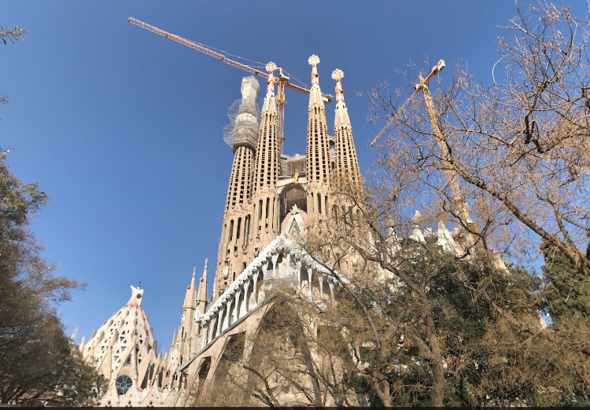

Conocido simplemente como la Sagrada Familia, es una basílica católica de Barcelona (España), diseñada por el arquitecto Antoni Gaudí. Iniciada en 1882, todavía está en construcción. Es la obra maestra de Gaudí y el máximo exponente de la arquitectura modernista catalana. Es el monumento más visitado de España, y es la iglesia más visitada de Europa tras la basílica de San Pedro del Vaticano.